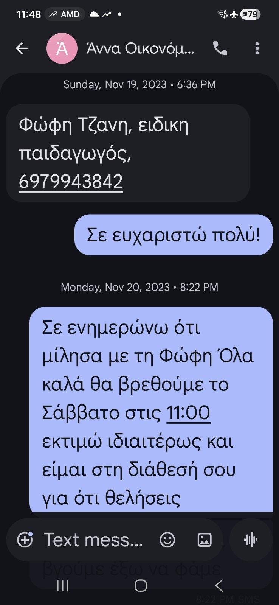
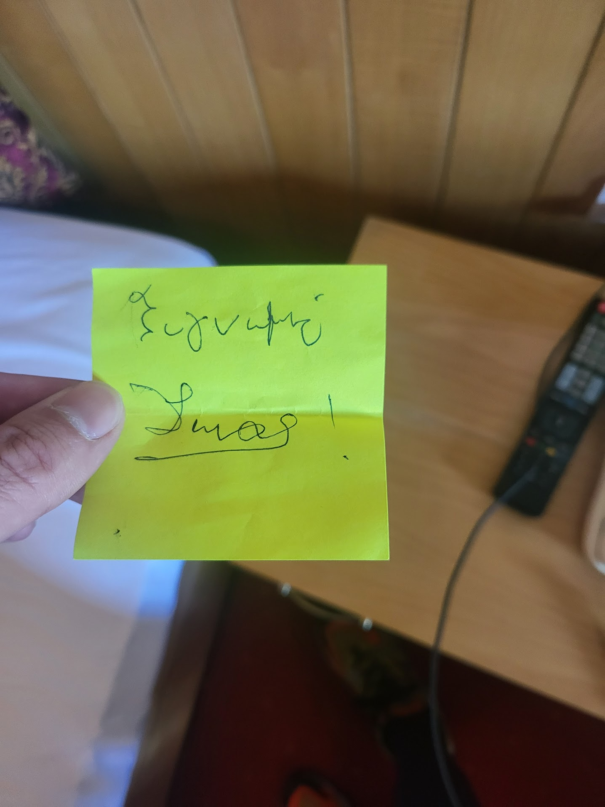

ΑΠΑΝΤΗΣΕΙΣ ΣΕ MEMO PAKLEX — Μήνυση κατά Τσεκούρα (Ψευδορκία, Άρ. 224 ΠΚ)
ΠΛΑΙΣΙΟ
Η ένορκη βεβαίωση της Αναστασίας Τσεκούρα εντάσσεται σε ένα σύνολο 4 ενόρκων βεβαιώσεων που φέρουν κοινά χαρακτηριστικά:
- Ίδια ημέρα: 19 Μαρτίου 2026 — μία ημέρα πριν τη δίκη των ασφαλιστικών μέτρων
- Ίδιο γραφείο: Λεωφ. Μεσογείων 2-4, γραφείο Μπρέγιανου
- Ίδια δικηγόρος: Δήμητρα Κουρκουλή (ΑΜ 29253 ΔΣΑ)
- Διαδοχικοί αριθμοί πρωτοκόλλου: Τσεκούρα 0077759 · Marinova 0077761 · Τσάκαλου 0077762 · Κανδύλη 0077763
Ταυτόσημη αφηγηματική δομή και ταυτόσημα talking points σε όλες — κατά βάση κατάθεση εξ ακοής (καμία μάρτυρας δεν ήταν παρούσα στα κρίσιμα γεγονότα).
Ειδική Επισήμανση — ΑΦΜ Marinova
Στην ένορκη βεβαίωση της Emilie Marinova (ΔΣΑ_ΕΒ_0077761_2026) αναγράφεται ΑΦΜ 076733377 — που είναι το ΑΦΜ της ίδιας της αντιδίκου Ευθυμίας Μπακολούκα.
Ο ΑΦΜ στην ελληνική έννομη τάξη αποτελεί μοναδικό ταυτοποιητικό στοιχείο φυσικού προσώπου — αντίστοιχο με τον αριθμό ταυτότητας. Η εγγραφή του ΑΦΜ της αντιδίκου στο έγγραφο αλλοδαπής μάρτυρα αποκαλύπτει ότι η Μπακολούκα είχε τον πλήρη έλεγχο της διαδικασίας κατάθεσης — παρείχε τα δικά της στοιχεία, υπαγόρευσε ή συντόνισε τα κείμενα, και η δικηγόρος Κουρκουλή αντέγραψε μηχανικά χωρίς επαλήθευση.
Η Μπακολούκα δεν ήταν απλώς αιτούσα — ήταν η ηθική αυτουργός αυτών των καταθέσεων. Ακόμη κι αν αποδοθεί σε αμέλεια, καταδεικνύει τον βαθμό ελέγχου της αντιδίκου επί της μαρτυρικής διαδικασίας και την πλήρη απουσία ανεξαρτησίας των μαρτύρων.
Η ένορκη Τσεκούρα κληρονομεί αυτά τα ελαττώματα, αλλά φέρει και ιδιαίτερα δικά της, που αναλύονται κατωτέρω.
ΓΙΑΤΙ Η ΤΣΕΚΟΥΡΑ ΕΙΝΑΙ ΙΔΙΑΙΤΕΡΑ ΥΠΟΛΟΓΗ
Κατά τον χρόνο κατάθεσης της ένορκης (19/3/2026), η Τσεκούρα γνώριζε ή όφειλε να γνωρίζει τα ακόλουθα — και τα απέκρυψε όλα:
Α. Επίσημη Κρατική Αξιολόγηση (ΚΕΔΑΣΥ)
Υφίστατο ήδη επίσημο Πόρισμα ΚΕΔΑΣΥ (17/3/2025 — ένα ολόκληρο χρόνο πριν την κατάθεσή της), το οποίο:
- Εκδόθηκε από 4 ειδικούς (ψυχολόγος, κοινωνική λειτουργός, ειδικός παιδαγωγός, λογοθεραπευτής)
- Βασίστηκε σε αξιολόγηση πολλών εβδομάδων
- Επιβεβαίωσε: ΔΕΠΥ + δυσγραφία + εναντιωματική-προκλητική διαταραχή (ΔΕΑ)
- Αποτελεί επίσημο κρατικό πόρισμα — φέρει ιδιαίτερη βαρύτητα στην ελληνική έννομη τάξη
Επιπλέον, δύο χρόνια πριν την κατάθεσή της, υπήρχαν ήδη:
- Γνωμάτευση παιδοψυχιάτρου Σταματοπούλου (29/1/2024 — 26 μήνες πριν την ένορκη) — F90.0 + εναντιωματικές συμπεριφορές, με δύο επιβεβαιώσεις σε διαφορετικούς χρόνους
- Συνεχής επιβεβαίωση από ψυχολόγο και ειδικό παιδαγωγό Χατζηδάκη που παρακολουθούν τον Αίαντα καθημερινά
Δεν υφίσταται καμία δικαιολογία για άγνοια. Η Τσεκούρα είτε γνώριζε και απέκρυψε σκοπίμως, είτε δεν γνώριζε επειδή αρνήθηκε να ενημερωθεί (βλ. §Δ κατωτέρω) — σε κάθε περίπτωση, η ευθύνη της είναι δεδομένη.
Η Τσεκούρα — ως «ψυχολόγος» που αυτοπροσδιορίζεται ως «ειδική παιδαγωγός» — δεν αναφέρει τίποτε από αυτά σε 9 σελίδες ένορκης. Η λέξη «εναντιωματικότητα» δεν εμφανίζεται ούτε μία φορά.
Γιατί η απόκρυψη της εναντιωματικότητας είναι κρίσιμη
Η Εναντιωματική-Προκλητική Διαταραχή (ΔΕΑ) είναι η κεντρική διάγνωση που εξηγεί τη συμπεριφορά του Αίαντα — θυμό, εκρήξεις, αντιδράσεις. Η απόκρυψή της εξυπηρετεί συγκεκριμένη στρατηγική:
- Ο συνδυασμός ΔΕΠΥ + ΔΕΑ είναι κληρονομικός. Τα συμπεριφορικά χαρακτηριστικά του Αίαντα (θυμός, εναντίωση, αδυναμία αυτορρύθμισης) παρατηρούνται και στη μητέρα — η οποία εμφανίζει ακριβώς τα ίδια μοτίβα: εκρήξεις θυμού, σωματική βία, αδυναμία διαχείρισης. Η αναγνώριση της ΔΕΑ θα αναδείκνυε αυτή τη σύνδεση.
- Παιδί με ΔΕΑ δεν «τιμωρείται» — θεραπεύεται. Τα χτυπήματα, η βία, η φωνή, η πίεση κατά παιδιού με εναντιωματικότητα δεν είναι απλώς αναποτελεσματικά — είναι κλινικά αντενδεδειγμένα και ποινικά κολάσιμα, καθώς επιδεινώνουν τα συμπτώματα. Αυτό ακριβώς έκανε η μητέρα — χτυπούσε επανειλημμένα ένα παιδί που χρειαζόταν θεραπευτική προσέγγιση.
Η στρατηγική της αντιδίκου — τεκμηριωμένη σε emails
- 5/12/2023: Η μητέρα της αντιδίκου (Λέλα Μπακολούκα) γράφει στον πατέρα προσπαθώντας να αποτρέψει την επίσκεψη στον παιδοψυχίατρο — πριν ακόμη από την αξιολόγηση ΚΕΔΑΣΥ: «Πρακτικά σου λέω ότι ο Αίαντάς μας το μόνο που έχει είναι η διάσπαση της προσοχής». Η στρατηγική απόκρυψης ξεκίνησε δηλαδή από την αρχή, πριν καν υπάρξει επίσημη διάγνωση.
- 26/12/2024: Ο πατέρας ζητά από τη Λέλα πληροφορίες για το κληρονομικό ιστορικό της Έφης (υιοθετημένη — άγνωστο βιολογικό υπόβαθρο) — κρίσιμο δεδομένου ότι ΔΕΠΥ + ΔΕΑ είναι κληρονομικά
- 27/12/2024: Η Έφη απαντά αρνούμενη ότι υπάρχει οποιαδήποτε κληρονομική προδιάθεση: «ποιοί είναι οι ειδικοί που έχουν πει ότι οποιοδήποτε από τα παιδιά έχει κάποια διαταραχή ή κληρονομική προδιάθεση;» — και απειλεί με δικαστικές ενέργειες αν ο πατέρας συνεχίσει να ερευνά
- 14/1/2025 (18 ημέρες μετά): Η Έφη καταθέτει αίτηση ασφαλιστικών μέτρων ζητώντας την αφαίρεση της επιμέλειας του πατέρα — στο δικόγραφό της γράφει: «Προφασίζεται ότι δήθεν ο υιός πάσχει από κάποια παθογένεια». Η χρονική σύνδεση είναι αποκαλυπτική: αμέσως μόλις ο πατέρας συνέδεσε τη διάγνωση με το κληρονομικό υπόβαθρο της υιοθεσίας, η μητέρα αντέδρασε καταθέτοντας αίτηση αφαίρεσης επιμέλειας — ισχυριζόμενη ότι ο πατέρας «εφευρίσκει» τη διαταραχή. Δεν αρνήθηκε απλώς τη διάγνωση — πέρασε στην επίθεση για να σταματήσει τη διερεύνηση.
Η Τσεκούρα, ένα χρόνο μετά τη γνωμάτευση Σταματοπούλου και ένα χρόνο μετά το Πόρισμα ΚΕΔΑΣΥ, συνεχίζει ακριβώς την ίδια στρατηγική — αποκρύπτοντας την εναντιωματικότητα ώστε η βία της μητέρας κατά παιδιού με αναπτυξιακή διαταραχή να μην αναγνωσθεί ως αυτό που είναι: κακοποίηση.
Β. Δικαστική Συναίνεση Μητέρας
Η ίδια η μητέρα προσήλθε στο δικαστήριο (Απρίλιος 2025) και συναίνεσε στη διαμονή του Αίαντα με τον πατέρα. Η δικηγόρος της τον συνεχάρη. Η ένορκη υπονοεί «αποξένωση» και «χειραγώγηση» — αποκρύπτοντας ότι η μητέρα η ίδια συμφώνησε ενώπιον δικαστηρίου. Αυτή η απόκρυψη ανατρέπει ολόκληρο το αφήγημα της ένορκης.
Γ. Δύο Ποινικές Δικογραφίες κατά Μητέρας
- ΑΒΜ Φ25-3866: Μήνυση πατέρα για κατ' εξακολούθηση ενδοοικογενειακή βία — 5 τεκμηριωμένα περιστατικά, βιντεοσκοπημένα, με απομαγνητοφωνήσεις, ανάλυση Δρ. Αντωνοπούλου, 2 ιατροδικαστικές εκθέσεις. Δίκη 5 Ιουνίου 2026.
- ΑΒΜ ΑΕ25-5389: Ο ίδιος ο Αίαντας κάλεσε μόνος του την Αστυνομία (3/4/2025) για να γλιτώσει. Ένα 12χρονο παιδί παίρνει τηλέφωνο την Άμεση Δράση — αυτό δεν γίνεται υπό καθοδήγηση.
Η ένορκη αποσιωπά πλήρως και τις δύο δικογραφίες.
Δ. Ο Πατέρας ΖΗΤΗΣΕ να την Ενημερώσει — Αρνήθηκε
Στα Viber (2/1/2025 — 14,5 μήνες πριν την ένορκη), ο πατέρας:
- Της πρότεινε γραπτώς να μιλήσουν 5 λεπτά — δεν απάντησε
- Της είπε: «Έχω τους καλύτερους ειδικούς για το παιδί μου και αν ρωτούσες θα μάθαινες» — δεν ρώτησε
- Της επεσήμανε: «Μόνο μίλαγες με τη φίλη σου που σε ενημέρωνε αποσπασματικά» — δεν αρνήθηκε
Παρ' όλα αυτά, είδε τον πατέρα να κρατά τα παιδιά στους ώμους στην Πρέβεζα, ήξερε ότι υπάρχουν ειδικοί, αρνήθηκε να μάθει — και ψεύδεται ενώπιον δικαστηρίου βάσει μονομερούς πληροφόρησης.
Η Τσεκούρα δεν απλώς αποσιώπησε. Αρνήθηκε ενεργά να μάθει την αλήθεια, και κατέθεσε ψευδώς βάσει αποκλειστικά μονομερούς πληροφόρησης από την ηθική αυτουργό μητέρα.
ΕΙΣΑΓΩΓΙΚΕΣ ΠΑΡΑΤΗΡΗΣΕΙΣ — Τρεις κρίσιμες επισημάνσεις
Ι. Η Τσεκούρα ΔΕΝ ΕΙΝΑΙ «Ειδική Παιδαγωγός»
Αυτοπροσδιορίζεται ως «Ψυχολόγος / Ειδική Παιδαγωγός» στην ένορκη για να προσδώσει επιστημοσύνη. Ο τίτλος είναι ψευδής.
Κατά το Άρθρο 20 του Ν.3699/2008 (Ειδική Αγωγή & Εκπαίδευση — https://www.opengov.gr/ypepth/?p=2148), «Εκπαιδευτικοί Ειδικής Εκπαίδευσης» ορίζονται αποκλειστικά ως:
- (Α) Κλάδος ΠΕ 71 (Δασκάλων Ειδικής Εκπαίδευσης): Πτυχίο Παιδαγωγικών Τμημάτων Δημοτικής Εκπαίδευσης Ειδικής Αγωγής, ή Τμημάτων Εκπαιδευτικής και Κοινωνικής Πολιτικής με κατεύθυνση εκπαίδευση ατόμων με αναπηρία, ή Παιδαγωγικά Τμήματα Ειδικής Αγωγής κατεύθυνσης Δασκάλων — Πανεπιστημίων ημεδαπής ή αναγνωρισμένο ισότιμο αλλοδαπής (ΔΟΑΤΑΠ) + πιστοποιητικό Ελληνομάθειας
- (Β) Κλάδος ΠΕ 70.50: Πτυχίο Παιδαγωγικού Τμήματος Δημοτικής Εκπαίδευσης + μεταπτυχιακό/διδακτορικό στην Ε.Ε. ή Σχολική Ψυχολογία, ή 2ετής μετεκπαίδευση Διδασκαλείων, ή 3ετής προϋπηρεσία σε δομές Ε.Ε.
Η Τσεκούρα: BSc Psychology (University of Luton) + MSc Special Education (IoE, London). Το BSc Psychology δεν είναι πτυχίο Παιδαγωγικού Τμήματος — είναι τμήμα Ψυχολογίας. Ακόμη κι αν το MSc αναγνωρίζεται ως μεταπτυχιακό Ε.Ε., απαιτείται βασικό πτυχίο Παιδαγωγικού Τμήματος (που δεν κατέχει). Δεν κατέχει ΠΕ 71, ΠΕ 78, ούτε ΠΕ 70.50. Δεν έχει αναγνώριση ΔΟΑΤΑΠ ως ειδική παιδαγωγός.
Πηγές:
- Νομοθεσία: Ν.3699/2008, Άρθρο 20 — Εκπαιδευτικοί Ειδικής Εκπαίδευσης (Υπουργείο Παιδείας)
- Μάνος Χατζηδάκης (πραγματικός ΠΕ 71, καθημερινή παρακολούθηση Αίαντα): «Η Τσεκούρα ΔΕΝ είναι ειδικός παιδαγωγός. Το δηλώνει για λόγους μάρκετινγκ επειδή έχει κέντρο ειδικής αγωγής.»
- Νομική αξιολόγηση Πεπελάση (email 26-30/3/2026): «Εντάσσεται στο πεδίο εφαρμογής του 224 ΠΚ... αυξάνει το δόλο της η ιδιότητά της... η δόλια απόκρυψη συνιστά ψευδή κατάθεση... η ηθική αυτουργία είναι δεδομένη... μπορεί να υποβληθεί καταγγελία στο ΣΕΨΥ.»
Αποτελεί ψευδή παράσταση ιδιότητας σε ένορκη βεβαίωση — αυτοτελής βάση μήνυσης.
{kind=link}
ΙΙ. Ο πατέρας ΖΗΤΗΣΕ να ενημερώσει την Τσεκούρα — εκείνη αρνήθηκε
Στα Viber (2/1/2025), ο πατέρας της προτείνει γραπτώς να μιλήσουν:
- «Σου πρότεινα γραπτώς να μιλήσουμε 5 λεπτά... Και δεν μου απάντησες τίποτα»
- «Έχω τους καλύτερους ειδικούς για το παιδί μου και αν ρωτούσες θα μάθαινες»
- «Μόνο μίλαγες με τη φίλη σου που η ίδια σε ενημέρωνε αποσπασματικά»
Η Τσεκούρα δεν αρνείται κανένα. Δεν ρώτησε ποιοι είναι οι ειδικοί, δεν δέχτηκε την πρόταση ενημέρωσης. Η μοναδική πηγή της ήταν η Μπακολούκα — μονομερώς, φιλτραρισμένα. Ωστόσο στην ένορκη παρουσιάζεται ως αντικειμενική ειδικός.
ΙΙΙ. Η πρωτοβουλία ήταν ΑΠΟΚΛΕΙΣΤΙΚΑ του πατέρα
Η Τσεκούρα υποστηρίζει ότι η μητέρα πρωτοστάτησε. Τα αποδεικτικά δείχνουν το αντίθετο — βλ. αναλυτικά §1-3.
Σύγκριση Τσεκούρα — Χατζηδάκης
| Τσεκούρα | Χατζηδάκης | |
|---|---|---|
| Τίτλος | «Ειδική Παιδαγωγός» — ΨΕΥΔΗΣ | ΠΕ 71 — ΠΡΑΓΜΑΤΙΚΟΣ |
| Σπουδές | BSc Luton + MSc IoE London | Ελληνικό Παιδαγωγικό Τμήμα |
| Επαφή με Αίαντα | 1 διανυκτέρευση (2/1/2025) | Καθημερινά — 16+ μήνες |
| «Διάγνωση» | «Κατάθλιψη + πανικός» → 100% ΛΑΘΟΣ | «Πρόοδος υπερβαίνει εκτιμήσεις» → ΣΩΣΤΟ |
| Πηγή πληροφόρησης | Αποκλειστικά Μπακολούκα (μονομερής) | Ανεξάρτητη επαγγελματική αξιολόγηση |
| Πρόταση πατέρα για ενημέρωση | Αρνήθηκε | — |
ΕΠΙ ΤΩΝ ΨΕΥΔΩΝ ΧΩΡΙΩΝ
Αδιάσειστα αποδεικτικά:
| Ημερομηνία | Ενέργεια | Αποδεικτικό |
|---|---|---|
| 17/10/2023 | Έρευνα ΚΕΔΑΣΥ — εντοπισμός 2ου ΚΕΔΑΣΥ Δ' Αθήνας | Slack screenshots |
| 19/11/2023 | Άννα Οικονόμου συστήνει Φώφη Τζάνη στον πατέρα | SMS screenshot |
| 20/11/2023 | Ο πατέρας επικοινωνεί με Φώφη Τζάνη | SMS + Slack |
| 28/11/2023 | Ο πατέρας επικοινωνεί με Μάνο Χατζηδάκη | SMS screenshot |
| 29/1/2024 | Ο πατέρας πηγαίνει τον Αίαντα στη Σταματοπούλου | Γνωμάτευση F90.0 |
| Μάρτ. 2025 | ΚΕΔΑΣΥ — επίσημη αξιολόγηση | Πόρισμα |
Η μητέρα δεν εμφανίζεται πουθενά. Η ίδια (αίτηση ασφ., σελ. 7): «του ζήτησα να ασχοληθεί με τα διαδικαστικά» — ομολογία.
{kind=link}
{kind=link}
Η εκπαιδευτικός ήταν η Άννα Οικονόμου — γνωστή του πατέρα. SMS (19/11/2023): «Φώφη Τζανη, ειδικη παιδαγωγός, 6979943842» → Ντέμης: «Σε ευχαριστώ πολύ!» → (20/11): «Μίλησα με τη Φώφη. Θα βρεθούμε το Σάββατο στις 11:00.»

Email thread «ΕΡΩΤΗΜΑΤΟΛΟΓΙΑ» (28/11-9/12/2023, 16 μηνύματα):
| Ημερομηνία | Ενέργεια |
|---|---|
| 28/11/2023, 13:46 | Γραφείο Σταματοπούλου στέλνει ερωτηματολόγια στον πατέρα |
| 28/11/2023, 14:03 | Ο πατέρας προωθεί στη μητέρα (CC) — εκείνη δεν κάνει τίποτα |
| 7/12/2023, 20:27 | Ο πατέρας στέλνει στο φροντιστήριο |
| 9/12/2023, 17:23 | Ο πατέρας επικοινωνεί με δασκάλα La Salle: «είμαι ο μπαμπάς του Αίαντα» |
Η μητέρα ενημερώθηκε σε CC — δεν έκανε ΤΙΠΟΤΑ. Η γνωμάτευση Σταματοπούλου αναφέρει εναντιωματικές συμπεριφορές — η Τσεκούρα τις αποσιωπά σκοπίμως.
Η Τσεκούρα ήταν παρούσα σε Πρωτοχρονιά 2023, Πρέβεζα 2023, Πρωτοχρονιά 2025 — βλέποντας τον πατέρα ενεργά παρόντα.
Τα παιδιά πλήρως εμβολιασμένα. Βιβλιάριο υγείας.
ΑΝΤΙΚΡΟΥΕΤΑΙ ΜΕ 6 ΦΩΤΟΓΡΑΦΙΕΣ (Αύγ. 2023):
Rafting στον Αχέροντα (η Τσεκούρα στο ΙΔΙΟ σκάφος!) · Ντέμης με Κλειώ στους ώμους στον ποταμό · Ντέμης κρατάει Κλειώ στην αγκαλιά · Λούνα παρκ


Η Τσεκούρα ήταν αυτόπτης μάρτυρας ενός πατέρα που κρατά τα παιδιά στους ώμους — και ισχυρίζεται «αδιαφορία». Αποκρύπτει το περιστατικό Πρωτοχρονιάς 2022 (ο γιος της Ίωνας χτυπούσε τον Ντέμη 20 λεπτά — γραπτή συγγνώμη).

Λήψη: Πρέβεζα 1 Λήψη: Πρέβεζα 2 Λήψη: Πρέβεζα 3 Λήψη: Σημείωμα Ίωνα
{kind=link}
Η Τσεκούρα ΔΕΝ ήταν παρούσα — «σύμφωνα με τα όσα μου περιέγραψαν η κόρη μου και η πεθερά μου». Εκκρεμεί η δική μας εκδοχή.
Η ίδια η μητέρα ΔΕΝ χρησιμοποιεί τη λέξη «επιθετικός» στα δικόγραφά της — κατασκευασμένος χαρακτηρισμός. Αίτηση ασφαλιστικών αναφέρει σύμβουλο γονέων-γάμου + ήρεμη ενημέρωση μετακόμισης.
Εκκρεμεί ταυτοποίηση.
ΠΛΗΡΗΣ ΑΝΤΙΚΡΟΥΣΗ — 14 Viber screenshots (2/1/2025):
- Μυστικός συντονισμός με Μπακολούκα
- Ψευδοδιάγνωση «κατάθλιψη + πανικός» χωρίς αξιολόγηση — 100% εσφαλμένη (ΜΟ 15,8 σήμερα)
- Ομολογία μεροληψίας: «Δεν ήμασταν ποτέ πολύ κοντά με εσένα»
- Ο Αίαντας επέλεξε τον πατέρα αυθόρμητα
- Ο πατέρας ζήτησε ενημέρωση — αρνήθηκε (βλ. Εισαγωγή §ΙΙ)
- Τόνος πατέρα: αξιοπρεπής — όχι «ιδιαίτερα επιθετικός»
- Χρονισμός: 12 ημέρες πριν τα ασφαλιστικά μέτρα (14/1/2025)
Πόρισμα ΚΕΔΑΣΥ προτείνει απαλλαγή γαλλικών. «Ειδικός» σε μαθησιακές δυσκολίες αγνοεί σύσταση ΚΕΔΑΣΥ.
Εκκρεμεί αντίκρουση.
«Σύμφωνα με γνωστούς» — αόριστο, χωρίς μάρτυρες.
ΑΝΤΙΣΤΡΟΦΗ ΒΙΑΣ — Τεκμηριωμένα περιστατικά:
- 5 καταγεγραμμένα περιστατικά βίας μητέρας κατά Αίαντα στη μήνυση (ΑΒΜ Φ25-3866)
- Βιντεοσκοπημένες αποδείξεις με απομαγνητοφωνήσεις
- Ανάλυση Δρ. Αντωνοπούλου (δικαστική ψυχολόγος) — επιβεβαιωμένη ως μάρτυρας για 5 Ιουνίου 2026
- 2 ιατροδικαστικές εκθέσεις (Ασκληπιείο Βούλας, 3/4/2025)
- Ο Αίαντας κάλεσε μόνος του την Αστυνομία (3/4/2025) για να γλιτώσει
Αποκρύπτει: μητέρα συναίνεσε ενώπιον δικαστηρίου · Αίαντας δήλωσε ότι θέλει τον πατέρα · «αποξένωση» = αντίδραση σε κακοποίηση.
40 ΦΩΤΟΓΡΑΦΙΕΣ (επιλογή Σβορώνου, Μάρτ.-Ιούλ. 2025): Κλειώ στους ώμους πατέρα · δείπνα Γαλαξίδι · ποδήλατα · SUP · σκάφος · «SUPER DAD/SON/DAUGHTER» · Twister · κήπος. Ευτυχισμένη σε κάθε φωτογραφία.


Δείτε όλες τις 40 φωτογραφίες
ΜΟ 15,8 — 6 μαθήματα 18-19. Χατζηδάκης: «πρόοδος υπερβαίνει τις πιο αισιόδοξες εκτιμήσεις».
ΠΛΗΡΗΣ ΣΥΛΛΟΓΗ — 40 Φωτογραφίες (Επιλογή Σβορώνου)
ΕΚΚΡΕΜΟΥΝ
| # | Θέμα | Προτεραιότητα |
|---|---|---|
| §7 | Γαλαξίδι — τι έγινε; ποιοι παρόντες; | ΥΨΗΛΗ |
| §8 | Μηνύματα με Μπακολούκα (συναινετική στάση) | ΥΨΗΛΗ |
| §9 | Περιστατικό πάρκινγκ/φαγητό | ΥΨΗΛΗ |
| §10 | Αντίδραση Αίαντα στο τηλέφωνο | ΜΕΣΑΙΑ |
| §14 | Κλειώ στο ασανσέρ | ΜΕΣΑΙΑ |
ΑΠΟΔΕΙΚΤΙΚΑ — 13 ΤΕΚΜΗΡΙΑ (ΟΛΑ ΔΙΑΘΕΣΙΜΑ)
| # | Τεκμήριο | Αντικρούει | Λήψη |
|---|---|---|---|
| 1 | Slack screenshot — ΚΕΔΑΣΥ πρωτοβουλία πατέρα (Οκτ-Νοε 2023) | §1, §2 | Λήψη |
| 2 | SMS Οικονόμου → Ντέμης — σύσταση Τζάνη (19-20/11/2023) | §1, §2 | Λήψη |
| 3 | SMS Ντέμης → Χατζηδάκης (28/11/2023) | §1 | — |
| 4 | Viber Τσεκούρα 2/1/2025 — 14 εικόνες | §10-13, Εισαγωγή | — |
| 5 | Email ΕΡΩΤΗΜΑΤΟΛΟΓΙΑ (28/11-9/12/2023, 16 μηνύματα) | §3 | Λήψη |
| 6 | Γνωμάτευση Σταματοπούλου F90.0 (29/1/2024) | §1, §3 | Λήψη |
| 7 | Πόρισμα ΚΕΔΑΣΥ (17/3/2025) | §11 | Λήψη |
| 8 | Έκθεση Χατζηδάκη (13/3/2026) | §19 | Λήψη |
| 9 | Σημείωμα Ίωνα Τσεκούρα (Πρωτοχρονιά 2022) | §6 | Λήψη |
| 10 | 40 φωτογραφίες Σβορώνου (Μάρτ.-Ιούλ. 2025) | §4, §18 | Δείτε |
| 11 | 6 φωτογραφίες Πρέβεζα (Αύγ. 2023) | §6 | — |
| 12 | Screenshot Χατζηδάκη: ψευδής τίτλος Τσεκούρα | Εισαγωγή | Λήψη |
| 13 | Ένορκη Τσεκούρα (PDF) | Αναφορά | Λήψη |
Πλήρες αρχείο με downloads: https://ntemian.github.io/paklex-evidence/ (κωδ: paklex2026)